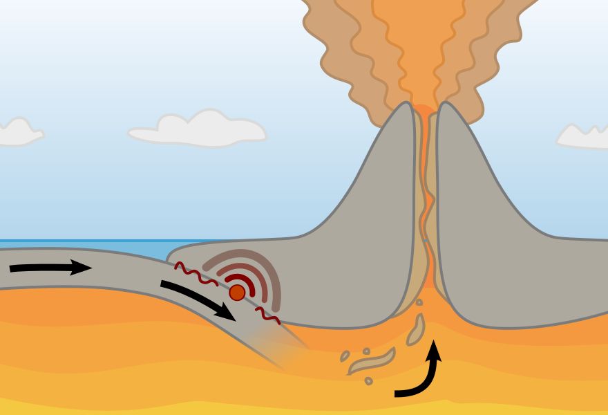

Powstawanie wulkanów
Występowanie wulkanów na Ziemi jest związane ze strefą młodej górotwórczości i z obszarami aktywnych trzęsień ziemi. Związek tych zjawisk tłumaczy teoria tektoniki płyt litosfery. W miejscach, gdzie jedna płyta litosfery zagłębia się pod drugą, wulkany powstają wzdłuż ich krawędzi – na kontynencie oraz wzdłuż rowów oceanicznych, np. wybrzeże Pacyfiku, Europa Południowa, Wyspy Japońskie, Filipiny. Wulkany powstają także w miejscach rozsuwania się płyt litosfery, czyli w grzbietach śródoceanicznych i w dolinach ryftowych, np. w Grzbiecie Śródatlantyckim i w Wielkich Rowach Afrykańskich.
Ponadto wulkany występują ponad plamami gorąca, które mogą być położone z dala od granic płyt, np. na Hawajach lub Reunionie. Wulkanizm Islandii związany jest zarówno z granicą płyt (Grzbiet Śródatlantycki), jak też z istnieniem plamy gorąca.
Unikalną w czasach historycznych okazją do obserwacji narodzin wulkanu było powstanie wulkanu Paricutín w Meksyku oraz wysepki Surtsey u brzegów Islandii.